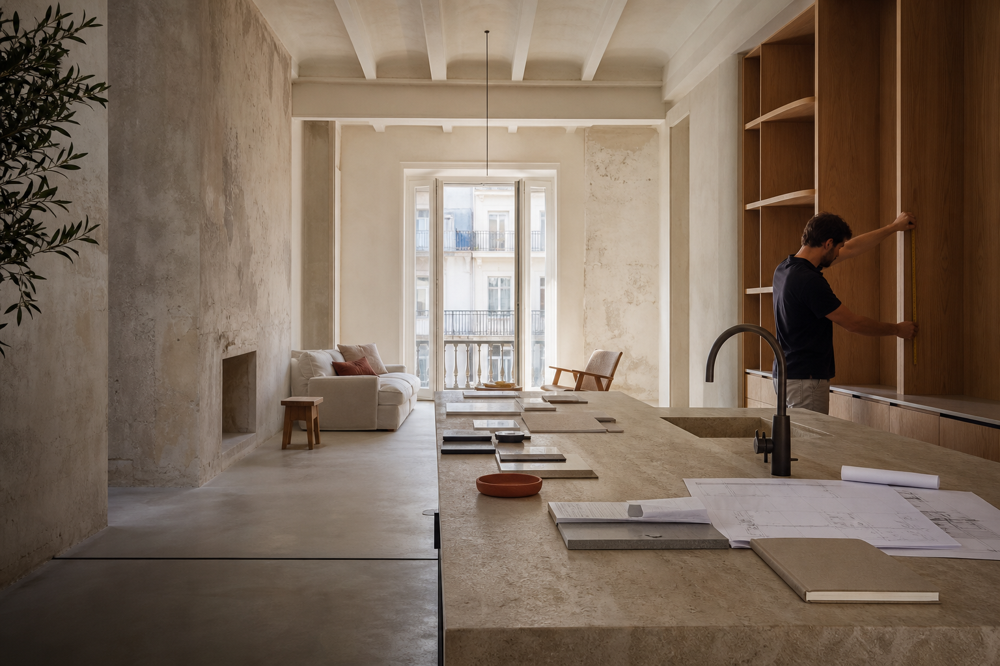

РАБОТАЛИ С АГЕНТСТВОМ НЕДВИЖИМОСТИ / SEO / ИСПАНИЯ
Восстановление SEO
и цифровой инфраструктуры
агентства в Испании.
После миграции сайт потерял поисковые позиции и органический трафик. Нужно было провести аудит, устранить технические блокеры и подготовить платформу к дальнейшему развитию.
SEO-аудитMediaElx CMSGA4GTMSearch Console
